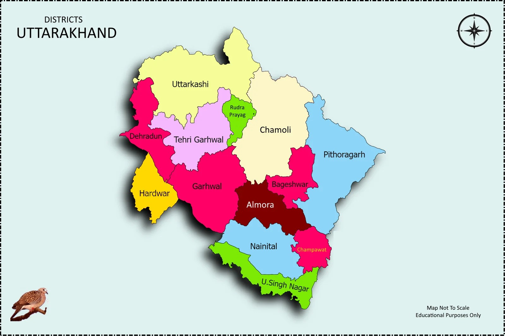

| Name: | Uttarakhand |
|---|---|
| Capital: | Dehradun |
| Language: | Hindi, Garhwali, Kumaoni |
| Chief Minister: | Pushkar Singh Dhami |
| Total Districts: | 13 |
| Population: | ~10.1 million (as per 2011 census) |
| Formation: | 9 November 2000 |
| Area: | 55,083 km² (19th largest in India) |
| Borders: | Uttar Pradesh, Himachal Pradesh, Tibet (China) |
| Coastline: | None (Landlocked State) |
Know more